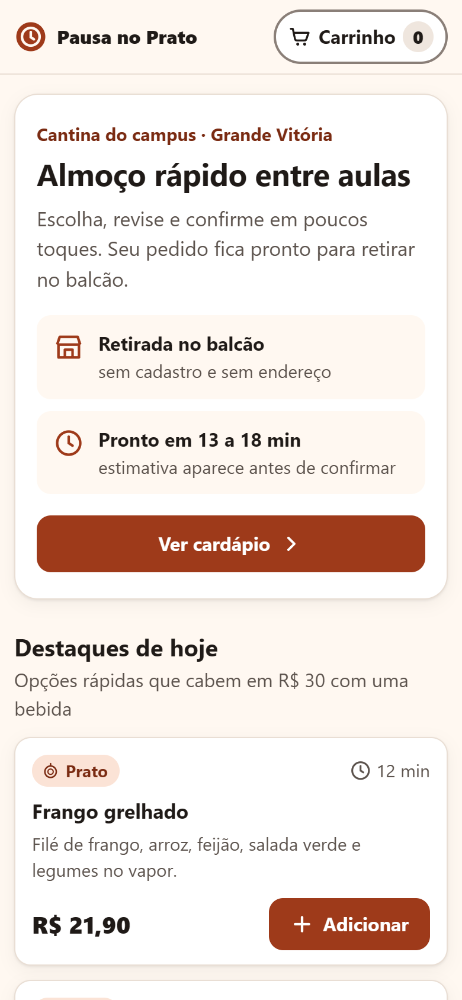
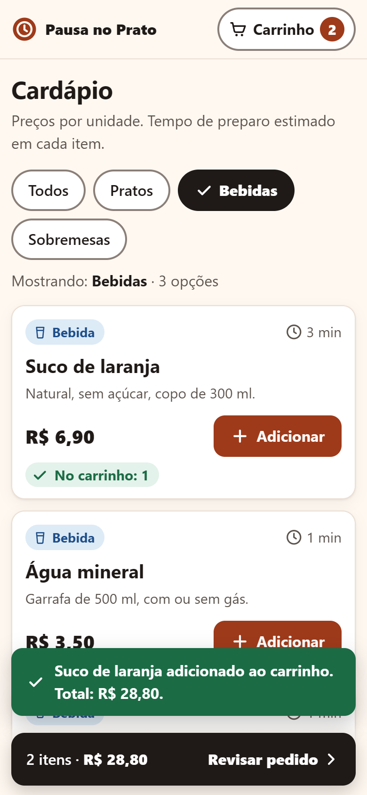
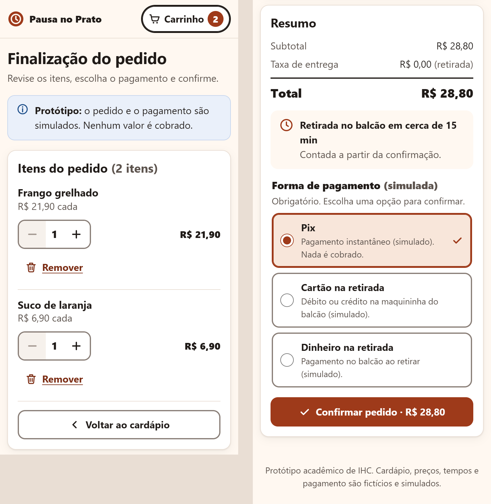
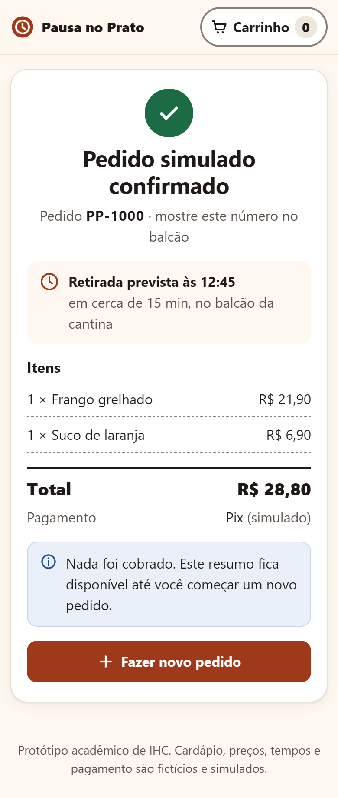
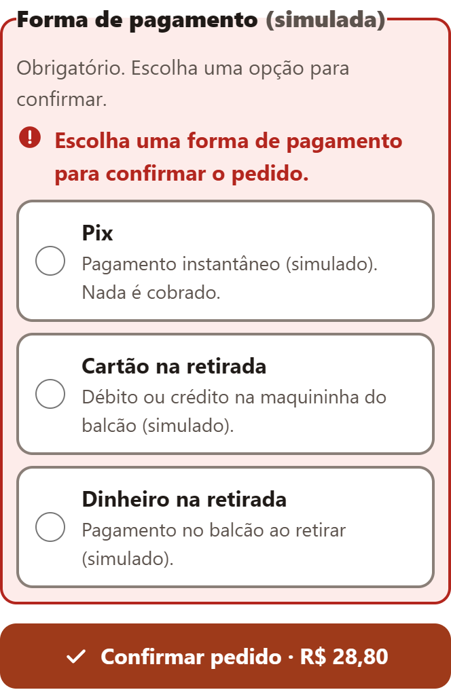

Integrante: Breno Ludgerio
Protótipo publicado: https://pausa-no-prato-ihc.pages.dev
Repositório público: https://github.com/ludgerios/pausa-no-prato-ihc
O projeto foi recortado para estudantes universitários da Grande Vitória que usam o celular para pedir o almoço durante um intervalo curto entre aulas. É um perfil assumido para o protótipo, sem pesquisa com usuários: as necessidades abaixo são hipóteses de projeto derivadas desse contexto.
O uso típico acontece em pé, no corredor ou a caminho da cantina, com uma das mãos ocupada, pouco tempo de atenção e orçamento contado. Por isso o pedido é para retirada no balcão, sem cadastro nem endereço, e o fluxo inteiro cabe em quatro telas.
Cenário de demonstração. Um estudante tem cerca de 20 minutos de intervalo e R$ 30 para escolher um prato e uma bebida. Ele escolhe Frango grelhado (R$ 21,90) e Suco de laranja (R$ 6,90), confere o total de R$ 28,80 e a retirada em cerca de 15 minutos, paga com Pix simulado e recebe o número do pedido.
Necessidades prioritárias (referidas como N1 a N5 nas decisões da seção 3):
O Pausa no Prato é um site estático em HTML, CSS e JavaScript, em português do Brasil, pensado primeiro para celular e adaptado a tablet e computador. Pratos, preços e tempos são fictícios. O catálogo, o carrinho e o pedido simulado ficam no próprio navegador (localStorage), então o carrinho sobrevive à navegação e ao recarregamento. A navegação usa endereços com # (por exemplo, #/cardapio), compatíveis com o botão Voltar e com hospedagem estática. Os valores são calculados em centavos e exibidos em reais. As quatro telas aparecem nas Figuras 1 a 4, todas com o mesmo pedido de demonstração.


A estimativa de retirada soma o maior tempo de preparo dos itens a 3 minutos de fila: no cenário, 12 + 3 = 15 minutos. Nas capturas, o relógio do navegador foi fixado em 12h30 para que o horário previsto (12h45) fique estável.

Cada decisão abaixo indica a necessidade atendida, onde foi implementada, como o professor pode observá-la e a referência usada: as heurísticas de Nielsen (H1 a H10) e os critérios da WCAG 2.2 aplicados.
3.1 Feedback imediato ao adicionar. Necessidades N1 e N2. No Cardápio, cada «Adicionar» mostra uma mensagem visível com o nome do item e o novo total, atualiza o contador do topo, marca o cartão com «No carrinho: 1» e exibe a barra «2 itens · R$ 28,80». A mensagem fica numa região role="status", anunciada pelo leitor de tela sem tirar o foco do botão. Como testar: adicionar um item e ver que a tela continua no cardápio (Figura 2). Referências: H1 Visibilidade do estado do sistema; WCAG 4.1.3 Mensagens de status.
3.2 Filtros com estado indicado por mais de um sinal. Necessidade N1. O filtro ativo fica escuro, ganha um ícone de visto e negrito, e a linha «Mostrando: Bebidas · 3 opções» confirma em texto. Para tecnologias assistivas, cada filtro é um botão com aria-pressed. Como testar: alternar os quatro filtros e conferir a contagem. Referências: H6 Reconhecer em vez de lembrar; WCAG 1.4.1 Uso de cor e 4.1.2 Nome, função e valor.
3.3 Preço, tempo e total sempre à vista. Necessidades N2 e N3. Cada item mostra preço em destaque e tempo de preparo; a Finalização mostra subtotal por linha, total e «Retirada no balcão em cerca de 15 min» antes do pagamento, e o próprio botão repete o valor: «Confirmar pedido · R$ 28,80». Referências: H1; H6; H5 Prevenção de erros.
3.4 Edição livre do pedido. Necessidade N4. Os botões de diminuir e aumentar alteram a quantidade (diminuir fica indisponível em 1 para evitar remoção acidental), «Remover» tira o item, e «Voltar ao cardápio» preserva o carrinho, inclusive após recarregar. Os controles têm nomes acessíveis completos, como «Aumentar quantidade de Suco de laranja», e cada alteração é anunciada com o novo total. Como testar: passos 4 e 5 do percurso (Figura 3). Referências: H3 Controle e liberdade do usuário; WCAG 2.5.3 Rótulo no nome e 4.1.2.
3.5 Prevenção e correção de erros. Necessidades N3 e N4. Confirmar sem forma de pagamento mostra «Escolha uma forma de pagamento para confirmar o pedido.» dentro do grupo, com ícone, borda e fundo de erro, e o foco vai para a primeira opção (Figura 5). A mensagem é ligada ao grupo por aria-describedby e some ao escolher uma opção. Com o carrinho vazio não há botão de confirmar: a tela explica o motivo e oferece «Ver cardápio». A confirmação só aparece quando existe um pedido concluído. Referências: H5 Prevenção de erros; H9 Ajudar a reconhecer e corrigir erros; WCAG 3.3.1 Identificação do erro, 3.3.2 Rótulos ou instruções e 3.3.3 Sugestão de erro.
3.6 Consistência de termos e ícones com texto. Necessidades N1 e N5. As mesmas ações têm sempre o mesmo nome («Adicionar», «Ver cardápio», «Revisar pedido», «Confirmar pedido», «Remover», «Fazer novo pedido»), e os ícones das ações principais vêm acompanhados de texto. Cores têm papel fixo: terracota para ação principal, verde para sucesso, vermelho para erro. Referências: H4 Consistência e padrões; WCAG 3.2.4 Identificação consistente.
3.7 Fechamento claro. Necessidade N3. A Confirmação repete itens, total, pagamento e horário de retirada, mostra um número para apresentar no balcão e oferece um único próximo passo, «Fazer novo pedido», que deixa o carrinho vazio (Figura 4). Referências: H1; H8 Estética e design minimalista.
3.8 Teclado, foco e estrutura. Necessidade N5. O documento usa lang="pt-BR", cabeçalho, main, títulos hierárquicos, listas, fieldset com legend e rótulos nos campos. O primeiro Tab mostra «Pular para o conteúdo»; ao mudar de tela o foco vai para o título; a ordem de Tab segue a ordem visual; o foco tem contorno azul de 3 px. As formas de pagamento são botões de opção nativos, operados pelas setas. Referências: WCAG 1.3.1 Informações e relações, 2.1.1 Teclado, 2.4.1 Ignorar blocos, 2.4.3 Ordem do foco, 2.4.7 Foco visível, 3.1.1 Idioma da página.
3.9 Leitura e toque em tela pequena. Necessidade N5. Texto base de 16 px, alvos de toque de pelo menos 44 × 44 px (meta do projeto, acima do mínimo de 24 px da WCAG 2.2) e layout em uma coluna no celular, duas ou três colunas em telas maiores, sem rolagem horizontal a partir de 320 px. Referências: WCAG 1.4.10 Refluxo e 2.5.8 Tamanho do alvo (mínimo).
3.10 Contraste medido. Necessidade N5. As cores foram escolhidas e depois medidas pela fórmula de luminância relativa da WCAG (script scripts/contrast.mjs). Todas as 27 combinações usadas passaram; a Tabela 1 mostra as principais. Referências: WCAG 1.4.3 Contraste (mínimo) e 1.4.11 Contraste não textual.
| Combinação | Razão | Mínimo |
|---|---|---|
| Texto principal sobre fundo creme | 16,37:1 | 4,5:1 |
| Texto secundário sobre fundo creme | 7,13:1 | 4,5:1 |
| Texto branco no botão principal (terracota) | 6,83:1 | 4,5:1 |
| Aviso de item adicionado (branco sobre verde) | 6,49:1 | 4,5:1 |
| Selo «No carrinho» (verde sobre verde-claro) | 5,61:1 | 4,5:1 |
| Mensagem de erro (vermelho sobre rosa) | 5,72:1 | 4,5:1 |
| Limite dos controles sobre fundo creme | 3,70:1 | 3:1 |
| Limite dos controles no grupo com erro | 3,41:1 | 3:1 |
| Contorno de foco sobre fundo creme | 6,07:1 | 3:1 |


O percurso foi automatizado com Playwright no Microsoft Edge sem interface (script scripts/test-flow.mjs) e executado no servidor local (python -m http.server) e na URL publicada, em sessão limpa e sem login. Nas duas execuções de 13/11/2026, as 85 verificações passaram. Elas cobrem:
aria-describedby; estado vazio sem botão de confirmar.Também houve revisão visual no navegador embutido do ambiente de desenvolvimento, com a largura emulada de 320 px, e das capturas usadas aqui. Durante os testes foram corrigidos três problemas: o aviso de item adicionado continuava visível na tela seguinte, a dica do Pix prometia um QR Code que não existia, e o nome acessível das opções de pagamento incluía a dica inteira. Limitações: não houve teste com usuários reais nem com leitor de tela em uso (NVDA ou TalkBack); os anúncios foram verificados pelos atributos role e aria-*. Celulares foram emulados por tamanho de tela, não testados em aparelho físico. Os resultados brutos estão em docs/verificacao/ no repositório.
Protótipo em produção (Cloudflare Pages): https://pausa-no-prato-ihc.pages.dev
Repositório com código, capturas e este relatório: https://github.com/ludgerios/pausa-no-prato-ihc
NIELSEN, Jakob. 10 usability heuristics for user interface design. Nielsen Norman Group, 1994, atualizado em 2024. Disponível em: https://www.nngroup.com/articles/ten-usability-heuristics/.
W3C. Web Content Accessibility Guidelines (WCAG) 2.2. W3C Recommendation, 2023. Disponível em: https://www.w3.org/TR/WCAG22/.
DEQUE SYSTEMS. axe-core: accessibility engine for automated web UI testing. Disponível em: https://github.com/dequelabs/axe-core.
MICROSOFT. Playwright. Disponível em: https://playwright.dev/.